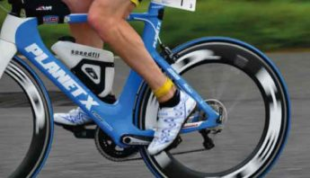

About the Event
The Tour de Northamptonshire Cyclosportive is suitable for all abilities. This fully supported ride takes cyclists through the country lanes of picturesque Northamptonshire, showcasing the beautiful rolling countryside that makes our region so special.
Route Options
Choose the distance that suits you best. All routes start from the same location and are fully supported with feed stations and marshals throughout:
- 30 miles — Perfect for those getting back in the saddle or looking for a leisurely ride
- 40 miles — A great all-rounder for intermediate cyclists
- 60 miles — Challenge yourself on our extended route for experienced riders
What's Included
Every participant receives:
- Fully marshalled route with road support
- Multiple feed stations
- Free event t-shirt
- Rider pack with route maps
- Mechanical support on route
Event Details
Date: 7 June 2026
Location: Northamptonshire country lanes
Start Location: Details and parking information will be provided upon registration